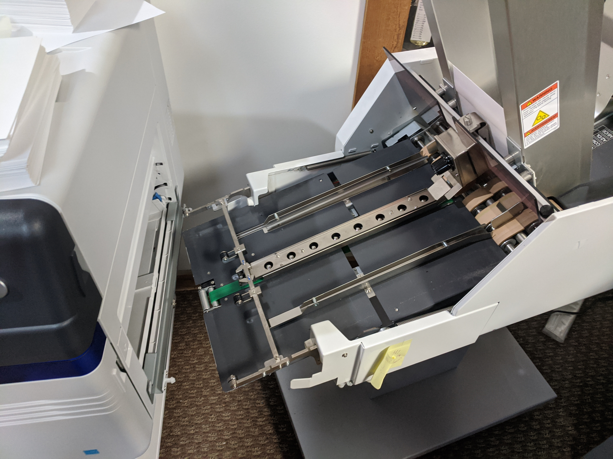
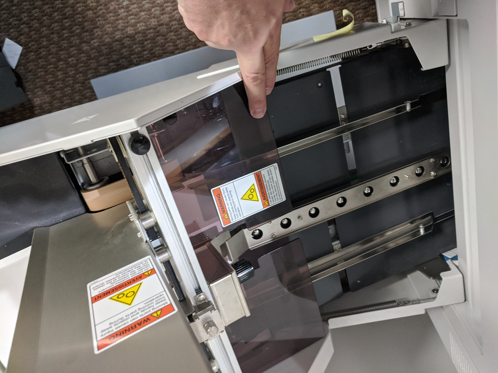
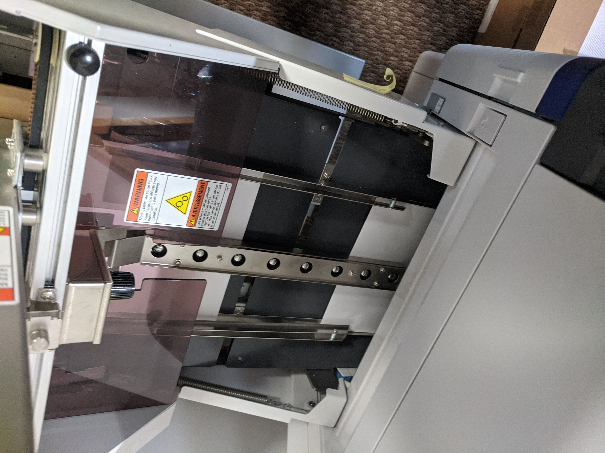

Lift latch and plastic shield then roll feeder away from printer.
Remove any envelopes from feeder tray and stacker.

Place 1 sample of the new envelope size in between the guides of the feeder’s stacker. Adjust the guide to a slightly loose fit on the envelope’s width.
Slide the first envelope onto the rollers from the stacker to the conveyer tray.
Adjust the side guides on the conveyer tray so that the edge of the envelope lies in the middle of each side guide
Place a dozen or so envelopes in the stacker and move the back support so that the back of the envelopes are supported at a slight angle, and lock the back support in place.
Slide the feeder back into the printer, and lower the clear plastic cover.

Lower the latch inside the conveyer tray to connect the feeder to the printer.
On the back of the feeder, hit the square white button labeled “START”, this should feed the envelopes from the stacker to the conveyer tray and into the printer.
